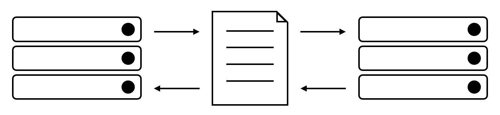
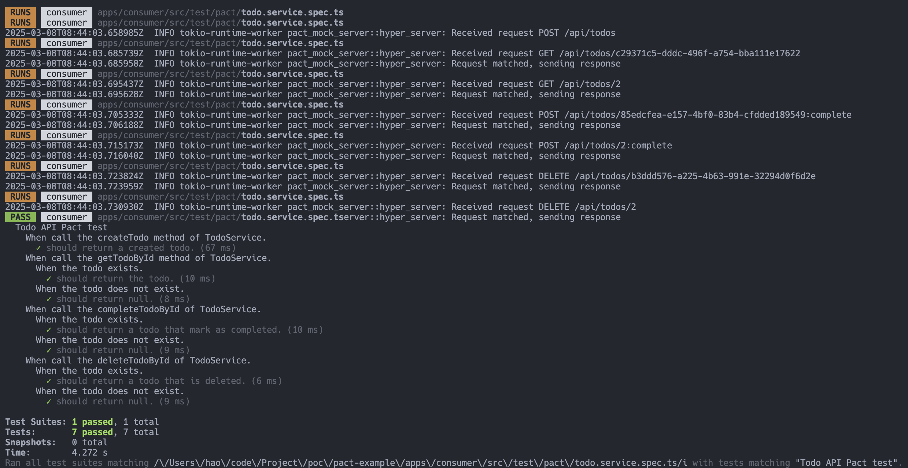
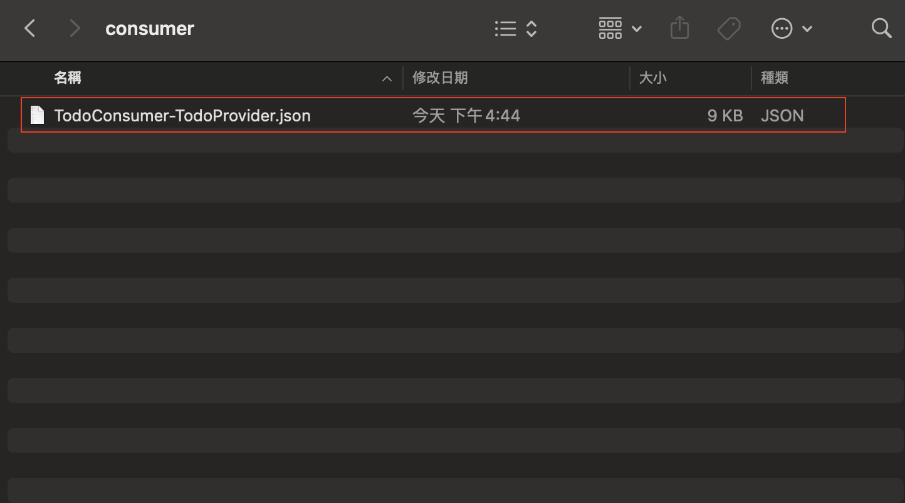
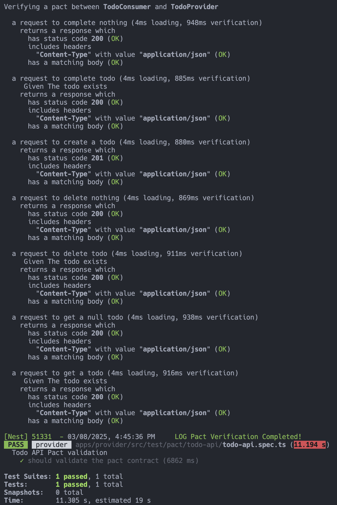

在 NestJS 使用 Pact 實現契約測試
在微服務架構中，各個服務由不同團隊獨立開發、部署與維運，這樣的彈性雖然增加了開發效率，但也同時導致服務間互動的不確定性。如何確保每個服務在獨立更新的同時，仍能正確溝通與協作？ 契約測試(Contract Testing) 正是解決這一問題的有效工具。
什麼是 Contract Testing？
Contract Testing 是一種專注於驗證服務間 介面(Interface) 正確性的自動化測試方法。此方法論會將服務區分成兩個角色：
- 提供者(Provider) ：提供 API 的服務。
- 消費者(Consumer) ：使用 Provider 提供的 API 的服務。
Provider 與 Consumer 之間會 提前 約定好 Interface，包含：請求格式、回應格式、錯誤處理機制等。這種約定可以是 OpenAPI、JSON Schema 或是其他 Contract Testing 工具來作為服務間共同遵循的標準，這套約定即 契約(Contract) 。而 Contract Testing 有兩種方法，分別是： 消費者驅動的契約測試(Consumer-Driven Contract Testing) 與 提供者驅動的契約測試(Provider-Driven Contract Testing) 。
注意：Contract Testing 並 不會也不該 驗證 完整的 Provider 商業邏輯，僅聚焦在 Interface 的驗證，商業邏輯的部分應屬於 單元測試(Unit Testing) 的範疇。

Consumer-Driven Contract Testing
這類型的 Contract Testing 是由 Consumer 定義契約內容來確保 Provider 提供的服務是否滿足它的期望。這樣的好處是 Provider 可以根據 Consumer 的實際需求來驗證與實作，達到快速反饋以及減少整合風險的效果，是一個適合內部團隊使用的 Contract Testing 方法。
Provider-Driven Contract Testing
這類型的 Contract Testing 是由 Provider 定義契約內容來統一管理 API 的文件與版本。這樣的好處是 Provider 可以讓所有 Consumer 依據統一的標準進行開發，是一個適合用於對外公開 API 的 Contract Testing 方法。
為什麼需要 Contract Testing？
如文章開頭所述，微服務架構使得服務之間的互動增加了不確定性，如果沒有驗證互動正確性的方式，當服務的 Interface 頻繁發生變化時，有可能會因此導致其他服務無法正常運作，造成損失。如果導入 Contract Testing 則可以提早捕捉到不兼容的問題，避免整合時才發現有這個狀況發生。另外，在驗證服務間是否如預期運作最常見的方式即 端對端測試(E2E Testing) ，但測試過程可能會涉及許多複雜的商業邏輯與其他依賴的項目，針對僅需驗證 Consumer 與 Provider 之間 Interface 是否符合預期的情境，使用成本較高且流程繁複的 E2E Testing 顯得有些大材小用，使用對完整環境要求低、能夠驗證 Interface 是否符合預期的 Contract Testing 會是更好的選擇。
Pact
Pact 是一套 程式碼優先(code-first) 的 Consumer-Driven Contract Testing 工具，提供多種程式語言的實作，如：JavaScript、Java、Golang 等。
Pact 的運作流程

Pact 在運作流程上可以拆成兩個階段： Consumer 階段 與 Provider 階段 ：
Consumer 階段
Consumer 在自己的測試中使用對應語言的 Pact 函式庫來定義預期的請求(HTTP Method、Path、Headers、Body 等)與回應格式(HTTP Code、Headers、Response Body 等)。測試執行期間，Pact 會啟動一個 Mock Server，Consumer 發送的請求會送到這個 Server，並會收到事前定義好的回應。測試完成後，Pact 會根據這些定義產生一個 JSON 格式的 Contract，用來記錄 Consumer 所期望的 Interface。
Provider 階段
Provider 要使用 Consumer 定義的 Contract 來驗證服務提供的內容是否符合期望，所以必須在測試時啟動服務，並使用對應語言的 Pact 函式庫來執行 Pact 驗證工具(Pact Verifier) ，會讀取 Consumer 產生的 Contract 檔案並 重放(Replay) Contract 內定義的請求，進而驗證服務最終回傳的內容符合 Contract 內定義的格式。如果驗證結果發現回應的格式不如預期，此 Contract Testing 就會失敗，如此一來，便可以及早發現 Interface 不符期待的問題。
NestJS 與 Pact
Pact 有提供 PactJS 套件供 JavaScript、TypeScript 開發者使用。NestJS 固然可以在既有的測試流程中使用此套件來實現 Contract Testing，甚至官方還為 NestJS 實作了 nestjs-pact 套件，十分貼心！
前置作業
假設已經有兩個基於 NestJS 實作的服務，一個是 Consumer、一個是 Provider，這些服務的專案需透過下方指令將 Pact 相關套件進行安裝：
1 | $ npm install nestjs-pact @pact-foundation/pact -D |
Consumer 測試的前置作業
假設 Consumer 這個專案有一個 TodoModule，該 Module 內有 TodoController 與 TodoService 並匯入了 HttpModule 來呼叫 API。下方是 TodoController、TodoService 與 HttpService 之間的關係，以類別圖來呈現：
classDiagram
class HttpService {
+get(url)
+post(url, payload)
+delete(url)
}
class TodoService {
-HttpService httpService
-TodoConfig config
-String todoApiUrl
+createTodo(payload)
+getTodoById(id)
+completeTodoById(id, completed)
+deleteTodoById(id)
}
class TodoController {
-TodoService todoService
+createTodo(payload)
+getTodo(id)
+completeTodo(id, payload)
+deleteTodo(id)
}
TodoService --> HttpService
TodoController --> TodoService
前面有提到 Contract Testing 是驗證服務間 Interface 的測試方法，對 Consumer 而言，與 Provider 互動的元件為 TodoService，所以針對 TodoService 撰寫 Contract。那要如何開始呢？首先，會需要建立 Pact 的實例，這邊可以使用 PactV3 這個類，是目前的主要版本：
1 | describe('Todo API Pact test', () => { |
上方是建立 PactV3 實例的方式，可以看到有幾個參數：
consumer：Consumer 的名稱。provider：Provider 的名稱。port：Pact 在執行測試時，會啟動一個 Mock Server，此參數即 Mock Server 的 port。dir：執行測試後會產生 Contract 檔案，會將檔案存放在此資料夾下。logLevel：執行測試時要顯示的 Log Level。
建立完畢後，緊接著就可以進行 NestJS 測試的前置作業：
1 | describe('Todo API Pact test', () => { |
補充 ：上方範例可以看到
HttpModule使用了Agent並將keepAlive設為false，這是因為如果沒有這樣設定，預設會是true，會導致 Mock Server 出錯。
一切準備就緒後，就可以來針對 TodoService 與 Provider 互動的方法進行測試了。
Provider 測試的前置作業
假設 Provider 這個專案有一個 TodoModule，該 Module 內有 TodoController、TodoService 與 TodoRepository，其中，TodoRepository 會負責與資料庫進行互動。下方是 TodoController、TodoService 與 TodoRepository 之間的關係，以類別圖來呈現：
classDiagram
class TodoRepository {
+createTodo(params)
+getTodoById(id)
+completeTodoById(id, completed)
+deleteTodoById(id)
}
class TodoService {
-TodoRepository todoRepository
+createTodo(payload)
+getTodoById(id)
+completeTodoById(id, completed)
+deleteTodoById(id)
}
class TodoController {
-TodoService todoService
+createTodo(payload)
+getTodoById(id)
+completeTodoById(id, payload)
+deleteTodoById(id)
}
TodoService --> TodoRepository
TodoController --> TodoService
前面有提到 Provider 在執行 Contract Testing 時，會需要啟動服務來進行驗證，但啟動服務並不是希望驗證完整的商業邏輯，只是要確定 API 的結果是符合期望的，所以需要把一些依賴去除掉，以上方範例來說，我們可以將 TodoRepository 透過 樁(Stub) 的方式進行處理。這邊先撰寫一個 TodoTestingRepository：
1 | import { Injectable } from '@nestjs/common'; |
這裡建立一個 TodoTestingModule 將 TodoRepository 當作 TodoTestingRepository 的 Token：
1 | import { Module } from '@nestjs/common'; |
這些都完成後，就可以來建置 Provider 的測試了。將 NestJS 測試的前置作業建立起來：
1 | // ... |
接著，使用 nestjs-pact 提供的 PactProviderModule 來建立 Pact Verifier，在建立的時候，假如是採用讀取 Contract 檔案的方式，就需要帶入 pactUrls 這個參數。當一切就緒後，透過 PactVerifierService 的 verify 方法即可執行驗證：
1 | // ... |
撰寫建立 Todo 的測試
先假設 Provider 提供的 [POST] /api/todos API 的請求 Payload 如下：
1 | type CreateTodo = { |
回應的 HTTP Code 為 201 且 Body 格式如下：
1 | type CreatedTodo = { |
Consumer
透過 PactV3 的 withRequest 定義發送請求的格式，以 [POST] /api/todos 來說，method 會定為 POST、path 會定為 /api/todos、body 會定為 CreateTodo 的格式。而預期的回應則透過 withResponseWith 來設置，status 會是 201、headers 會含有 Content-Type 為 application/json 的值，比較特別的是，body 使用了 Pact 提供的 MatchersV3 來輔助驗證格式與資料，達到更精準的驗證，同時也可以減少 hardcode 測試資料的情況。下方為範例程式碼：
1 | describe('Todo API Pact test', () => { |
定義好預期的請求與回應之後，可以透過 executeTest 來執行測試，會使用 Pact 啟動的 Mock Server 供 Consumer 進行行為的驗證。以範例來說，會針對與 Provider 互動的 TodoService#createTodo 方法進行行為驗證：
1 | describe('Todo API Pact test', () => { |
撰寫取得 Todo 的測試
先假設 Provider 提供 [GET] /api/todos API 回應的 HTTP Code 為 200 且 Body 格式如下：
1 | type FoundTodo = { |
Consumer
與撰寫建立 Todo 測試時的寫法大同小異，不過以取得 Todo 的情境來說，會分成「有找到 Todo」跟「沒找到 Todo」兩個情境。另外，為了要驗證取得的 Todo 符合 Consumer 所定義的格式，在雙方不 hardcode 的情況下，可以運用 given 讓 Consumer 傳遞 狀態(State) 給 Provider，Provider 會根據 State 做出對應的策略，以這個範例來說，Consumer 會將預期收到的 Todo 格式傳遞給 Provider，Provider 會在執行驗證之前，將該筆資料準備好，避免因 State 問題導致測試出錯：
1 | describe('Todo API Pact test', () => { |
Provider
針對傳遞狀態的部分需要額外做處理，Pact 有提供 stateHandlers 讓我們可以根據不同情況執行不同策略進而處理 State。以前面 Consumer 傳遞的 The todo exists 來說，Provider 需要將傳遞進來的資料寫入 TodoTestingRepository 內，這樣在執行 API 存取時，就一定會有該筆資料存在。下方是範例程式碼：
1 | // ... |
注意：上方程式碼中，將
params強制轉型的原因是 Pact 在型別定義是寫string，但事實上該參數的型別為 Consumer 傳遞的 State。
執行驗證
補充：關於「完成 Todo 的測試」與「刪除 Todo 的測試」就不額外佔篇幅來寫了，處理方式大同小異。
當 Consumer 執行測試時，成功的畫面如下圖：

並且會如預期產生一個 Contract 檔案：

此時執行 Provider 的測試時，成功的畫面如下圖：

結論
當我們在微服務架構中導入 Contract Testing 時，能在開發過程中即時發現潛在的 API 變更問題。本篇文章是以手動執行 Contract Testing 的角度來撰寫，但實務上，手動執行 Contract Testing 並不足以應對持續變動的系統環境，因此將 Contract Testing 納入 CI/CD 流程成為關鍵的一環。
透過 CI/CD，我們可以在每次變更時自動執行 Contract Testing，確保 API 的更新不會破壞現有的依賴關係。這不僅能減少因 API 變更導致的溝通成本，也能讓團隊更有信心地進行版本演進。此外，Pact 還有提供 Pact Broker 這個工具，在 CI/CD 驅動驗證的流程中扮演了不可或缺的角色。它能夠集中管理所有 Contract，確保 Provider 與 Consumer 之間的 Contract 始終保持一致。
最終，Contract Testing 與 CI/CD 的結合，使得 API 變更的驗證變得自動化、可預測，進而提升整體開發的穩定性。透過 Pact Broker，團隊可以輕鬆管理不同版本的 Contract，並確保每一次的部署都是在雙方協議之下進行，真正落實契約驅動的 API 開發模式。